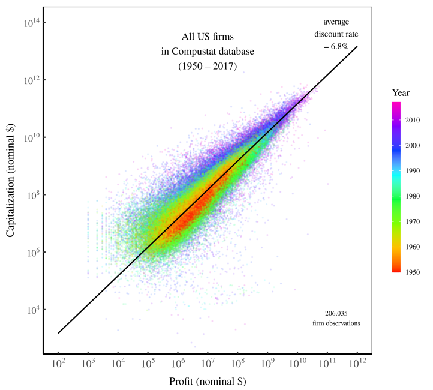

2 Capitalization
2.1 Discount Rate
Fix
Where did the discount rate come from? The answer: out of thin air. Like the capitalization ritual itself, the discount rate is whatever we define it to be. Capitalists employ the capitalization ritual by ritualistic choosing a discount rate that they deem ‘proper’.

Figure: Profit and capitalization of US firms, 1950 – 2017. Each point represents a US firm. Color indicates the year of observation. The black line shows how capitalization relates to profits for a discount rate of 6.8% — the average found in the data. There are about 200,000 observations in total.
Capitalization is proportional to profit discounted at a rate of 7%.
Is there something special about the discount rate of 7%? The answer is yes and no. That rate is special in the sense that it’s what US capitalists have deemed to be ‘proper’. But this rate is banal in the sense that it has no deeper meaning. US capitalists discount at 7% because that is the norm they have accepted. Gesture the cross. Discount at 7%. Regularity from ritual.
Until the emergence of capitalization in the fourteenth century, [the ‘proper’ discount rate was] seen as a matter of state decree, sanctioned by religion and tradition, and modified by necessity. The nobility and clergy set the just lending rates as well as the tolerated zone of private divergence, and they often kept them fixed for very long periods of time.
Today, the ‘proper’ discount rate still has an element of decree. Governments (via central banks) set the benchmark interest rate, which in turn affects the benchmark discount rate on equity.
Far more than just a ‘monetary phenomena’, then, the inflation rate signals instability in the social order. That instability, it seems, translates into capitalists fears about the future. When the price system is more unstable, capitalists discount present income more steeply.
The ‘science of finance’ is first and foremost a collective ethos. Its real achievement is not objective discovery but ethical articulation. Taken together, the models of finance constitute the architecture of the capitalist nomos. In a shifting world of nominal mirrors and pecuniary fiction, this nomos provides capitalists with a clear, moral anchor. It fixes the underlying terrain, it shows them the proper path to follow, and it compels them to stay on track. Without this anchor, all capitalists — whether they are small, anonymous day traders, legendary investors such as Warren Buffet, or professional fund managers like Bill Gross — would be utterly lost.
Finance theory establishes the elementary particles of capitalization and the boundaries of accumulation. It gives capitalists the basic building blocks of investment; it tells them how to quantify these entities as numerical ‘variables’; and it provides them with a universal algorithm that reduces these variables into the single magnitude of present value. Although individual capitalists differ in how they interpret and apply these principles, few if any can transcend their logic. And since they all end up obeying the same general rules, the rules themselves seem ‘objective’ and therefore amenable to ‘scientific discovery’.
The regularities of corporate finance are majestic in scope. But these regularities stem not from any laws of nature. They are regularities from ritual.
Perhaps the most important question is where this ritual is headed. Does capitalization have a long-term future? Neoclassical economists like William Nordhaus think so. They’re happy to apply the capitalization ritual to existential crises like climate change. And the net present value of their calculations tells them (surprise surprise) that we should do essentially nothing. But of course, by applying a heavy discount rate to future income, that is what they assumed in the first place. It’s ritualized apathy.
The ritual of capitalization is surrounded by a mystique of ‘higher truth’. Whenever you encounter such a mystique, it’s a good bet that you’re dealing with ideology. The point of the ‘mystique’ is to stop you from looking under the ideology’s hood.